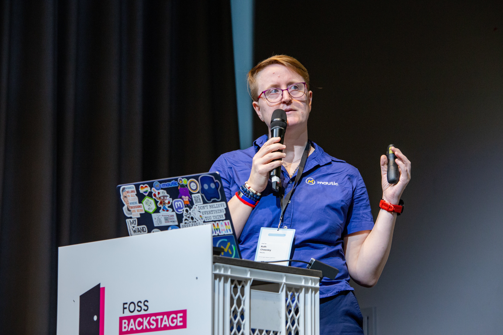

Hello, I'm Sīlavāpi.
You may have known me as Ruth Cheesley — I was ordained into the Triratna Buddhist Order in 2026 and given my new name. Same person, same work: open source, community, dharma, and rather a lot of running.
Read the story behind the name
Long term user and contributor to open source projects, I'm currently working full-time as Project Lead for Mautic.
Speaking regularly at events around the world on a range of topics from open source to living an active life with a disability.
Proud to be a trustee of Breathworks, helping people around the world living with pain and suffering.
Ordained into the Triratna Buddhist Order in 2026, after more than twelve years of practice — Sīlavāpi is the name I was given.
Living a full and active life with Ehlers-Danlos Syndrome, including a slight obsession with ultramarathon endurance running.
Read the blog
Get in touch

- September 2026Open Source Summit Europe, Amsterdam
- November 2026Mautic Conference Global, online
Open source is where I found a home for that drive to connect.